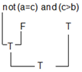

Concepto
Son todas las operaciones que permiten interconectar verificaciones, son los siguientes: Y (and), O (or) y No (not)
Las operaciones unidas por un operador lógico Y (and) serán verdaderas solo si todas ellas son verdaderas, de lo contrario será falsa.
Las operaciones unidas por un operador lógico O (Or) serán falsas solo si todas son falsas, de lo contrario será verdadera.
La operación precedida por el operador lógico NO (Not) si la operación es verdadera esta se convertirá en falsa al tener el operador No precedida y si es falsa se convertirá en verdadera.
Ejemplos operador Y
Las operaciones unidas por un operador lógico Y (and) serán verdaderas solo si todas ellas son verdaderas, de lo contrario será falsa.
Ejemplo
Evaluando la expresión:
Según la definición es falso porque una de ellas es falsa.
Ejemplos operador O
Las operaciones unidas por un operador lógico O (Or) serán falsas solo si todas son falsas, de lo contrario será verdadera.
Ejemplo
Evaluando la expresión:
Según la definición es Verdadero porque una de ellas es Verdadera.
Ejemplos operador NO
La operación precedida por el operador lógico NO (Not) si la operación es verdadera esta se convertirá en falsa al tener el operador No precedida y si es falsa se convertirá en verdadera.
Ejemplo
Evaluando la expresión:
Según la definición es Falso porque la condición es Verdadera, y al negarla, queda Falsa
Ejemplo de Operadores Lógicos Y, O, No
Teniendo en cuenta la prioridad de los operadores relacionales se tiene:
Sea: a = 10 b = 12 c = 13 d =10
1. ((a>b) or (a<c)) and ((a=c) or (a>=b))
Solución:
2. ((a>=b or (a<d)) and (a>=d) and (c>d))
Solución:
3. not (a=c) and (c>b)
Solución:
